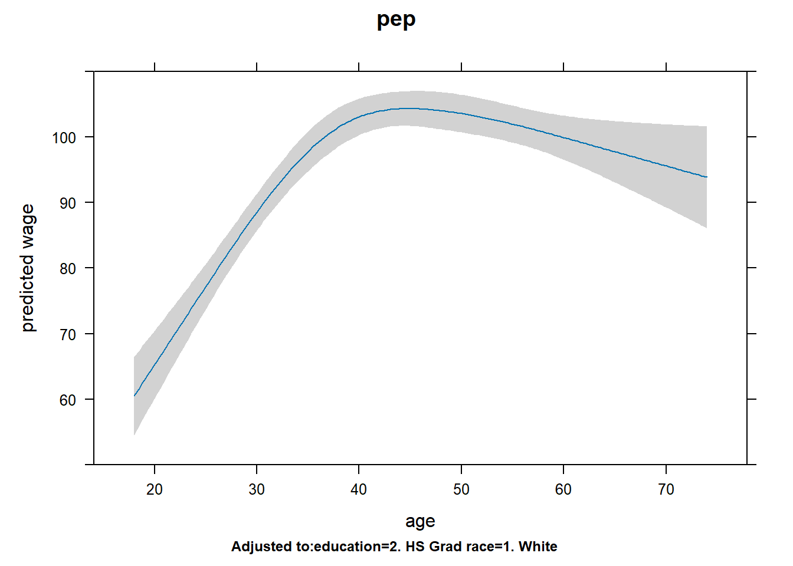
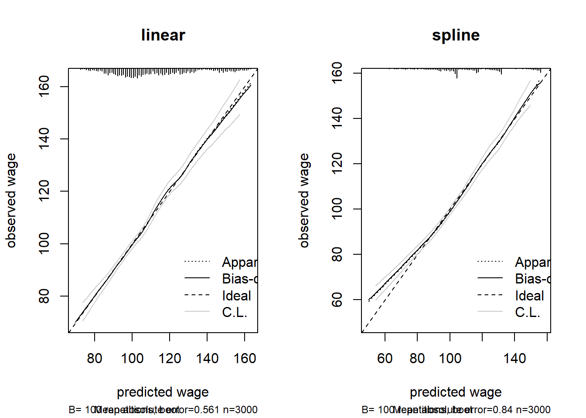

Based on the age and wage relationship, there is a slight non linear relationship.
11 Question 2
fit_spline <-ols(wage ~rcs(age, 4) + education + race, data = Wage, x =TRUE, y =TRUE)plot(rms::Predict(fit_spline, age), xlab ="age", ylab ="predicted wage",main ="pep")

There is a large difference in the implied curve compared to the linear fit. The implied curve has a large increase until around age 40, and then a gradual decrease.
Yes, based on the mse values, the spline model has a lower mean squared error than the linear model.
13 Question 4
fit_lin_cal <-ols(wage ~ age + education + race, data = Wage, x =TRUE, y =TRUE)cal_lin <-calibrate(fit_lin_cal, method ="boot", B =100)cal_spline <-calibrate(fit_spline, method ="boot", B =100)par(mfrow =c(1, 2))plot(cal_lin, main ="linear", xlab ="predicted wage", ylab ="observed wage")
n=3000 Mean absolute error=0.561 Mean squared error=0.57642
0.9 Quantile of absolute error=1.367
plot(cal_spline, main ="spline", xlab ="predicted wage", ylab ="observed wage")

n=3000 Mean absolute error=0.84 Mean squared error=2.02593
0.9 Quantile of absolute error=1.405
par(mfrow =c(1, 1))
The spline model seems to have slight deviation at it’s early values and therfore slight systematic miscalibration.
14 Question 5
Based on the following: - Our initial answer to question 1 showed that there was non linear relationship. - The spline model in question 3 had a lower mean squared error than the linear model. - Although the spline model in question 4 had slight miscalibration, it is still well calibrated in terms of fitting the 45 degree line.